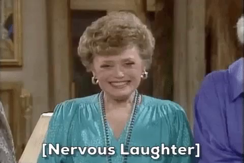

Hedging your bets
13 January 2023

Something I hadn't anticipated when I decided to prioritise not being in denial when dealing with cancer. When you're waiting for a test result or whatever you have to kind of hold different possibilities in your head.
- Stop looking at houses because we might not be able to move. If I'm not around or am sick, my partner won't be able to pay the mortgage, I don't want him to have to deal with that.
- I might need xyz treatment. What will the impact of radiotherapy or chemotherapy be on my body, on my ability to do the things I care about.. *googles the specific chemo drugs and radiotherapy courses for the relevant type and stage of cancer etc etc*
Taking the time to make sure you've thought through, are prepared, ready to accept whatever you're about to be told, and ask what's necessary in the next conversation you have with the doctor (you don't get many of these so it's vital to make the most of each one) is a whole thing..
Even when you get good news (which I did this time around 🎉) for me it takes a hell of a lot of time to process it, to let all of that go and get anywhere close to feeling relief. Especially when you'll be going through it again in another few months. I got good news three weeks ago and am still not there, come to think of it I don't think I've processed the previous round from eight months ago lolol. 🙃
I've been exceptionally lucky with my treatment (and the NHS 👇🏻) but bloody hell it's tiring.